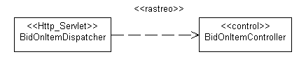

|
Producto de trabajo: Clase de análisis representa los roles que
desempeñan las instancias de elementos de diseño; estos roles se pueden cumplir con uno o más elementos de modelo de
diseño. Además, un único elemento de diseño puede cumplir múltiples roles. Las observaciones siguientes tratan las
diferentes formas en que se pueden cumplir los roles de análisis:
-
Una clase de análisis se puede convertir en una única clase de diseño en el modelo de diseño.
-
Una clase de análisis se puede convertir en parte de una clase de diseño en el modelo de diseño.
-
Una clase de análisis se puede convertir en una clase de diseño agregada en el modelo de diseño. (Lo que significa
que los componentes de este agregado no se modelarán explícitamente como clases de análisis).
-
Una clase de análisis se puede convertir en un grupo de clases de diseño que hereda de la misma clase en el modelo
de diseño.
-
Una clase de análisis se puede convertir en un grupo de clases de diseño funcionalmente relacionadas en el modelo
de diseño.
-
Una clase de análisis se puede convertir en un subsistema de diseño en el modelo de diseño.
-
Una clase de análisis puede pasar a formar parte de un subsistema de diseño, como una o más interfaces y sus
implementaciones correspondientes.
-
Una clase de análisis se puede convertir una relación en el modelo de diseño.
-
Una relación entre clases de análisis se puede convertir en una clase de diseño en el modelo de diseño.
-
Las clases de análisis manejan principalmente los requisitos funcionales, y los objetos se modelan desde el dominio
del "problema"; las clases de diseño manejan los requisitos no funcionales, y modelan objetos desde el dominio
"solución".
-
Las clases de análisis se pueden utilizar para representar "los objetos que queremos que el sistema dé soporte" sin
tomar una decisión sobre cuántos queremos soportar con hardware y cuantos con software. Por lo tanto, una parte de
una clase de análisis la puede realizar el hardware, y no modelarse en el modelo de diseño.
Cualquier combinación de las anteriores también es posible.
Si se mantiene un modelo de análisis separado, asegúrese de mantener la rastreabilidad desde el elemento de diseño
identificado hasta las clases de análisis a las que corresponden. Para obtener más información, consulte el
apartado Correlación con el modelo de análisis.
Esta sección sólo es aplicable si se mantiene un modelo de análisis separado.
Durante el diseño, se identifican los elementos de diseño que dan soporte a una alineación más precisa con la
arquitectura y las tecnologías escogidas. Cada clase de análisis del modelo de análisis se puede asociar con,
como mínimo, una clase de diseño en el modelo de diseño.
Para modelar esta rastreabilidad, una dependencia de <<rastreo>> debe dibujarse desde el elemento de diseño
hasta las clases de análisis que representan, tal como se muestra en el diagrama siguiente:

Nota: los enlaces de rastreabilidad se dibujan desde los elementos del modelo de diseño hacia los
elementos del modelo de análisis, para que el modelo de diseño sea dependiente del modelo de análisis y no al
contrario.
Debe decidir antes de que empiece el diseño, cómo deben relacionarse las clases del modelo de diseño con las clases de
implementación; esto debe describirse en las directrices de diseño específicas del proyecto.
El modelo de diseño puede ser más o menos cercano al modelo de implementación, dependiendo de como correlacione las
clases, paquetes y subsistemas a las clases de implementación, archivos, paquetes y subsistemas del modelo de
implementación. Durante la implementación, deberá solucionar a menudo pequeños problemas tácticos relacionados con el
entorno de implementación que no deberían afectar al modelo de diseño. Por ejemplo, las clases y los subsistemas se
pueden añadir durante la implementación para manejar el desarrollo paralelo, o para ajustar la importación de
dependencias. Para obtener más información, consulte los apartados Tarea: Estructurar el modelo de implementación y Técnica: Correlacionar de diseño a código.
Debe existir una correlación coherente desde el modelo de diseño hacia el modelo de implementación. El Producto de trabajo: Directrices específicas del proyecto debe
definir esta correlación, y debe aplicarse un nivel coherente de abstracción en el modelo de diseño.
Un buen modelo de diseño tiene las características
siguientes:
-
Satisface los requisitos del sistema.
-
Es resistente a cambios en el entorno de implementación.
-
Es fácil de mantener en relación con otros posibles modelos de objeto y para la implementación del sistema.
-
Está claro como implementarlo.
-
No incluye información que esté mejor documentada en el código del programa.
-
Es fácil de adaptar a cambios en requisitos.
Para características específicas, consulte Lista de
comprobación: Modelo de diseño.
|